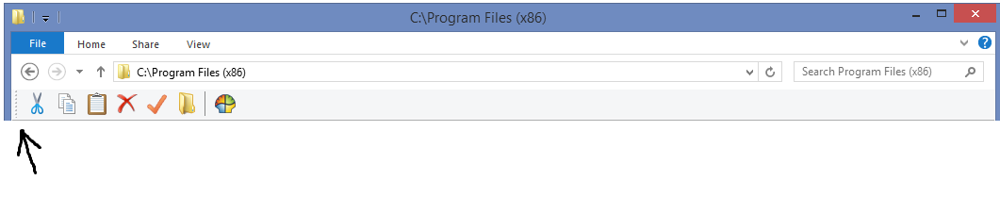

When I first installed CS, I was able to slide the toolbar around horizontally in the Explorer shell window. Suddenly, that no longer works. The little dots you click to drag the toolbar left and right no longer function at all, and the toolbar is stuck on the left side.
I don't know what killed this functionality, but I wanted to be able to the move the toolbar, and wanted it on the right side, for example.
I'm on Windows 8 by the way. Tried repairing and uninstalling/reinstalling already, and it didn't help. Just to reiterate, I'm 100% positive this functionality *was* there when I originally installed. I could dock it the left (seen below) or the right, or anywhere in between. I think there used to be little grabby dots on both sides, though they've mysteriously disappeared from the right side... frustrating.
Also, the toolbar is not locked. I tried locking and unlocking multiple times, and it didn't help. FWIW, I tried checking and unchecking every option in the "Toolbar Settings" tab under the Settings... realizable toolbar, big buttons, etc. None of them seemed to help!
Guessing there's a random entry buried in the registry somewhere that has to be changed from a 0 to a 1? I much appreciate any help anyone can give!

